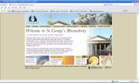

Tracy James
Home
Biography
Education
Ensembles
Music
Contact
Gallery
Links
Welcome to links
Trillium
Stephen Butler - Instrument Repairs
Andy Eastwood - Ukulele
Bromley Youth Music Trust

St George's Bloomsbury
Jill Kemp - Recorder
Bernard Hayes - Composer
Graham Neal - Tenor
Joanna Wyld
Oxford Chamber Orchestra
Helen Reid - Piano
Orchestra of Situation Opera